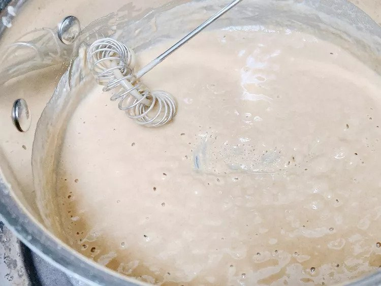

Blond Roux

A basic sauce used in making several dishes, from cheese sauce to Sweedish meatballs
Ingredients
- ¼ cup of butter
- ½ cup of flour
Steps
- Place a saucepan over medium heat. Then add butter and stir until melted.
- Reduce heat to low. Whisk in flour, 1 tablespoon at a time, and cook, whisking constantly.
- Once the roux becomes fragrant yet does not take on much color. The dish is complete.